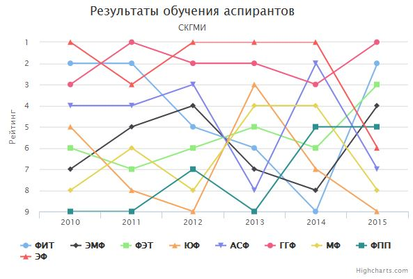

Графическое представление рейтинга деканатов
Интегральный рейтинг
Графики по критериям:
|  | |
Согласно приказу № 384/ОД ректора СКГМИ(ГТУ) Ю.И. Разоренова для повышения качества учебного процесса и объективности его оценки, производится ежегодное ранжирование факультетов дневной формы обучения по следующим критериям:
- посещаемость;
- успеваемость;
- процент сессионных оценок с низкой мотивацией;
- семестровая активность преподавателей;
- результаты обучения аспирантов;
- грантовая активность